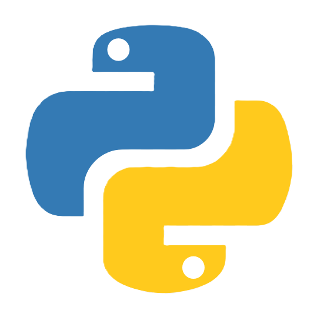
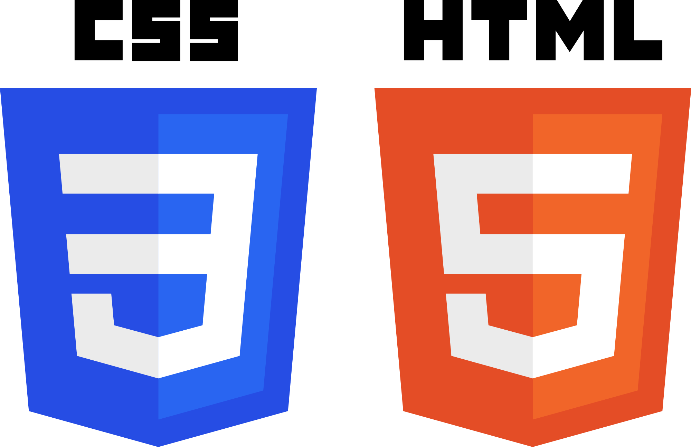

#Masada Takahisa / 正田 貴悠
#About...
はじめまして。ポートフォリオの閲覧ありがとうございます。
私のことを少しでも知っていただければ幸いです。
自己紹介
#Skills
-プログラミングスキル-
C++

経験年数:2年
頻度:
部活動でマイコンのプログラムを書くときなどによく使用しています
Python
経験年数:2年
頻度:
Pythonは授業やROSを行うときに使用しています
HTML/CSS
経験年数:半年
頻度:
このポートフォリオの作成やハッカソンなどに使用しました。
-組み込み-
Arduino
経験年数:2年
頻度:
部活動での簡単な実験や、新一年生への教育で使用しています
Raspberry Pi
経験年数:1年
頻度:
部活動や授業で使用しています
ROS2
経験年数:1年
頻度:
ROS2を用いてロボットの制御をしています。現在は自動化の開発を進めています
mbed
経験年数:2年
頻度:
ロボットに乗せるメインマイコンを書くときに使用しています
yolo
経験年数:1年
頻度:
ロボットに物体を識別する機能を持たせるときに使っています
-ツール-
Visual Studio Code
経験年数:2年
頻度:
大抵のプログラムはこれで書いています
Visual Studio
経験年数:2年
頻度:
趣味でアプリを作るときに使います
Arduino IDE
経験年数:2年
頻度:
Arduinoボードのプログラミングに使用しています
VSCode PlatformIO
経験年数:2年
頻度:
主に部活で使うマイコンのプログラムを書くときに使います
はんだごて
経験年数:7年
頻度:
電子工作や修理に使用しています